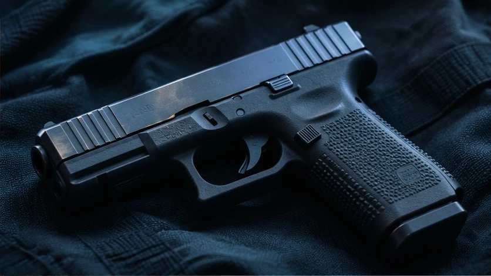
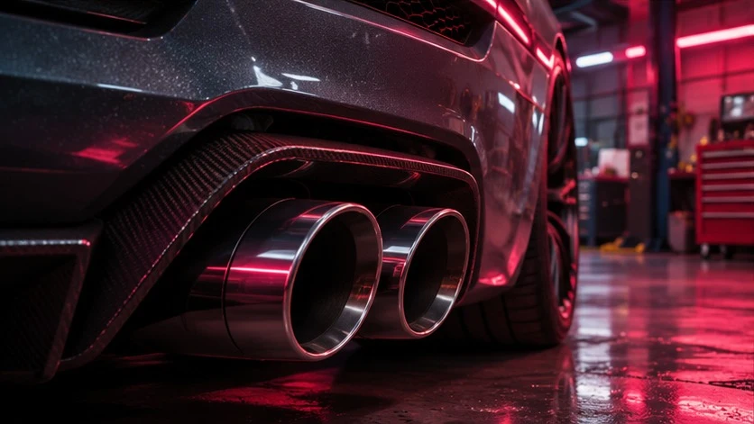

Redux
Освещение и цветокоррекция
GTA V ROLEPLAY
Каталог и установщик модов для GTA V Roleplay. Подбирайте графику, оружие и звуки, сохраняйте любимые моды и устанавливайте их из одного окна.
Освещение и цветокоррекция

Модели и текстуры оружия

Транспорт, оружие и город
Маршруты и дополнения
Распакуйте ZIP целиком и запустите Redline Mods.exe из папки Windows. Для установки модов выберите папку GTA V.
Первый запуск открывает локальный демокаталог. Перед установкой приложение покажет, какие файлы изменятся, и предложит подтвердить запись.